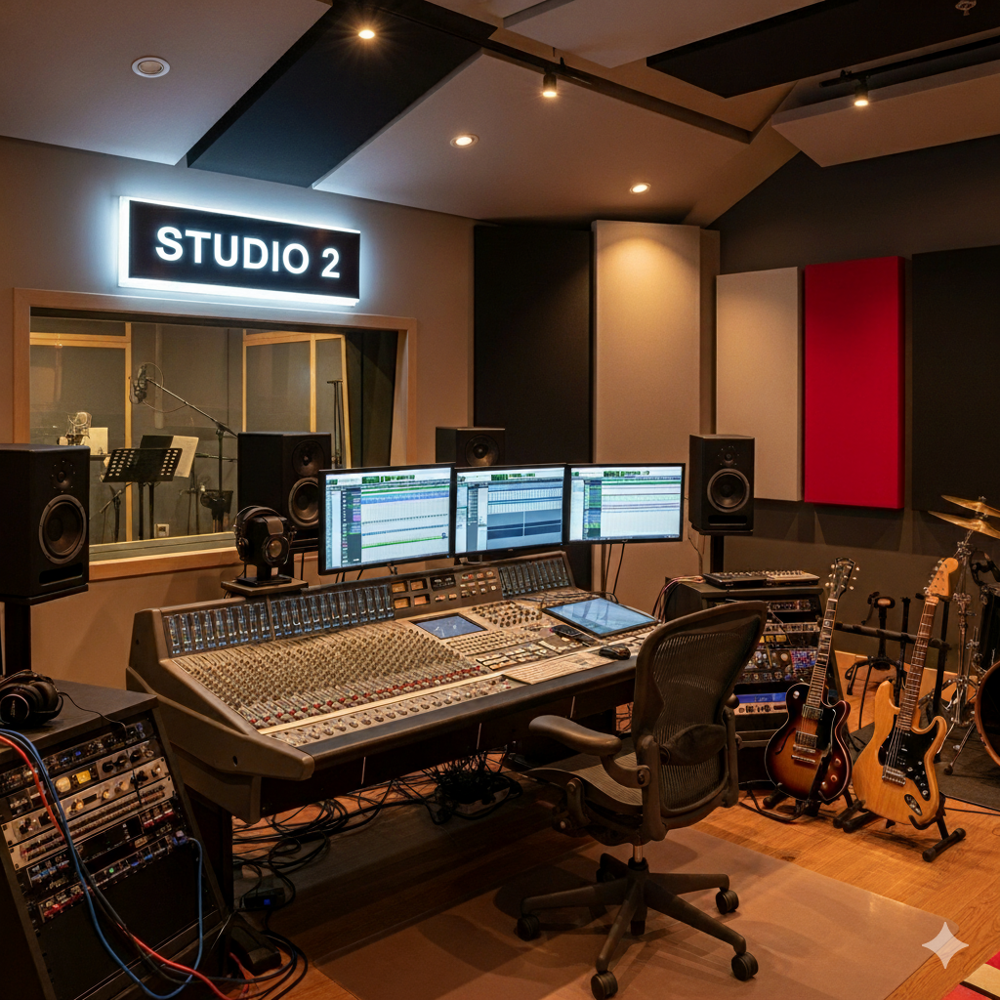
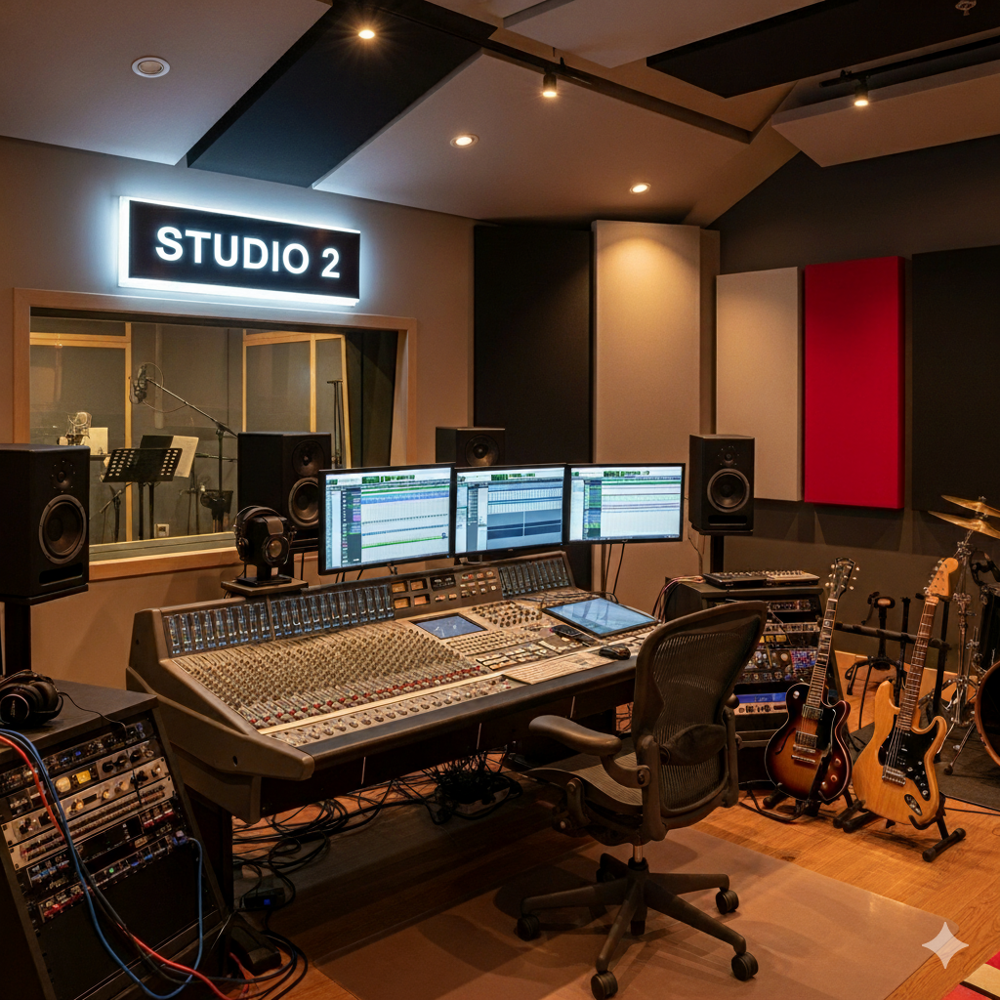

ManyPeople
Welcome to ManyPeople, where sound isn't just heard, it's felt, experienced, and meticulously crafted into an art form! We're not just audio engineers; we're sonic architects, weaving intricate tapestries of sound that elevate your music from good to absolutely breathtaking. Imagine your tracks, not just playing, but resonating with a clarity, depth, and punch that captivates every listener. That's the ManyPeople magic! We dive deep into the heart of your audio, polishing every frequency, balancing every instrument, and ensuring every note shines with its true potential. From the subtle shimmer of a cymbal to the thunderous roar of a bassline, we obsess over the details so you don't have to. We're here to transform your sonic dreams into a vibrant reality, making your music not just heard, but unforgettable.
Why We Do What We Do
Why do audio engineers dedicate their lives to the pursuit of perfect sound? Because we believe that music is more than just notes and rhythms; it's emotion, storytelling, and a universal language that connects souls. Our passion stems from the profound impact a well-engineered track can have. We're driven by the desire to help artists communicate their vision with unparalleled clarity and power. We live for that moment when a mix clicks, when a master breathes new life into a song, and when we hear the sheer joy in an artist's voice as they experience their creation truly come alive. It's about honoring the artistry, amplifying the message, and ensuring that every sonic detail contributes to an unforgettable listening experience. We're not just technicians; we're facilitators of dreams, helping your music reach its fullest, most impactful potential.
How We Do What We Do
Our journey to sonic mastery is paved with years of relentless practice, unwavering dedication, and an unyielding commitment to resilience. It's a path of continuous learning, where every project is an opportunity to refine our craft and push the boundaries of what's possible. We've spent countless hours honing our ears, understanding the intricate dance of frequencies, and mastering the delicate art of dynamic control. Our expertise isn't just theoretical; it's forged in the crucible of real-world challenges, from taming unruly recordings to coaxing brilliance from the most complex mixes. We embrace every technical hurdle as a chance to innovate, every creative block as an invitation to explore new solutions. Our resilience means we never settle for "good enough"; we relentlessly pursue perfection, knowing that every subtle adjustment contributes to the grand symphony of a truly exceptional sound. We combine cutting-edge technology with time-honored techniques, always adapting, always evolving, and always striving to deliver a sonic experience that transcends expectations. This isn't just a job; it's a calling, a lifelong pursuit of audio excellence driven by an insatiable curiosity and an unwavering passion for making your music sound its absolute best.
 


Testimonials
"ManyPeople transformed our sound! The clarity and depth they brought to our tracks were simply astounding. A truly professional and passionate team."
- Abbey Road Studios
"Working with ManyPeople was a game-changer for our latest album. Their mixing engineers have an incredible ear for detail, and the final masters were perfect."
- Cape Town Audio Works (South Africa)
"From recording to mastering, ManyPeople exceeded all our expectations. Their dedication to sonic excellence is unmatched. Highly recommended!"
- Sunset Sound Recorders